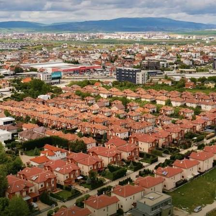

📍 Ku është?
Lagjja NIC gjendet në Çagllavicë, afër Prishtinës. Një burim e vendos lagjen përballë Grand Store dhe përmend qasje të drejtpërdrejtë në rrugët kryesore.
🏘️ Si është lagjja?
Nga të dhënat e pronave, NIC është kryesisht zonë banimi me shtëpi private, me shumë ndërtime relativisht të reja. Ka shtëpi 180–225 m² dhe prona me oborre prej rreth 2.8–3 ari e më shumë.
🏠 Shtëpitë / pronat
Ka mjaft oferta të dokumentuara për shtëpi në NIC. Për shembull:
🏫 Çka ka afër?
Në zonën e Çagllavicës gjendet edhe Kids Academy, kids academy një institucion parashkollor.
Në vetë zonën e NIC gjendet edhe Luxury Hair luxery hair
🏪 Biznese
Ka edhe biznese të ndryshme rreth NIC/Çagllavicës, ndërsa një pikë e identifikuar drejtpërdrejt me emrin e zonës është NIC & ALBIONI Office, afër Albi Mall.
📜 Historia
Për historinë e themelimit të Lagjes NIC nuk gjeta burim publik të besueshëm që tregon kur është themeluar, pse quhet NIC apo kush e ka krijuar lagjen. Pra, për këtë pjesë duhet burim lokal/komunal që të mos ta jap informacion të rreme
Shkurt: NIC = lagje banimi në Çagllavicë, afër Prishtinës dhe Grand Store, me kryesisht shtëpi private, rrugë lokale, prona të mëdha dhe biznese përreth.
🌐 9. Lidhja me Çagllavicën dhe Veternikun
Në burime NIC nganjëherë përshkruhet si “Veternik–Çagllavicë”, gjë që mund të krijojë konfuzion. Një burim lokalizimi e shënon pikërisht si “Lagjia Nic, Veternik-Çagllavice”, ndërsa burime të tjera e japin si Lagjja NIC, Çagllavicë, Prishtinë.
Prandaj, për adresë praktike, forma më e qartë është:
.jpg)
.jpg)